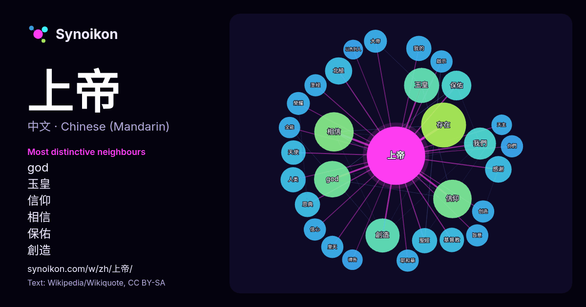

中文 · 热门词
上帝
“god” · 来自维基百科, Wikiquote 1658 次出现中其周围的词。

最具特色的邻近词
- god 37×
- 玉皇 34×
- 信仰 29×
- 相信 27×
- 保佑 25×
- 創造 25×
- 北極 20×
- 感谢 20×
- 恩典 18×
- 存在 18×
- 聖經 16×
- 榮耀 15×
- 我們 15×
- 皇天 15×
- 大帝 15×
- 旨意 14×
- 天使 14×
- 啟示 14×
- 耶和華 14×
- 圣经 13×
× = 比维基百科普通文本中多出的倍数。
最常见的邻近词
- 存在 57
- 相信 44
- 信仰 42
- god 38
- 玉皇 35
- 世界 34
- 創造 33
- 他們 32
- 我們 29
- 认为 28
- 認為 26
- 保佑 25
- 他的 23
- 中的 21
- 北極 21
- 感谢 20
- 没有 20
- 自然 20
- 沒有 19
- 人类 18
上下文
- 在中華文化信仰中，上帝是中國君主（天子）所祭拜的至上神，又稱為天帝、皇天上帝或昊天上帝，民間俗稱為上天、老天、老天爺、天主、天公、天老爺、天公伯。對昊天上帝的信仰，源自古代中國對於天空（蒼天、昊天），以及北極星（北辰、帝星）的崇拜。以上天廣大，稱昊天。遠望青色，稱蒼天。人尊莫過於帝，托之於天，故稱上帝 Wikipedia snippets · 上帝
- 玄天上帝，本稱玄武大帝，宋真宗大中祥符五年（1012年），为避讳宋圣祖赵玄朗之名而改称为真武。通稱北極玄天上帝。常被簡稱為玄帝、北帝、黑帝、真武大帝。其又有玄武神、真武神等稱；臺灣民間俗稱上帝公、上帝爺公、帝爺公等。[來源請求]玄天上帝象徵著二十八宿中的北宮玄武，為統理北方之道教大神，而北方在五行之 Wikipedia snippets · 玄天上帝
- 上帝”、“皇天上帝”等。尚書記載，舜帝繼位後，就祭祀“上帝”，並向上帝宣稱自己受到禪讓稱帝。而周朝也有祭祀“昊天上帝”的紀載，而在周禮中甚至有設置專門祭祀“昊天上帝”的祭祀規範。東漢後期，张道陵所創建的五斗米道使天帝成為了該教的最高神。直到唐朝，玉皇上帝 Wikipedia snippets · 玉皇上帝
- 上帝之城。大地之城與上帝之城最根本的差別在於，前者人民的共通點在於對自己的愛，後者則是結合於對上帝的愛和因此而生的對彼此的愛。在對比這兩個城從起源到結局的過程中，他對人類的群體生活有深入的討論，也建構了基督教的歷史觀。 本書標題取自《詩篇／聖詠集》第八十七篇第三節：「上帝 Wikipedia snippets · 上帝之城
- in the New Testament），是1世纪罗马犹太行省的犹太传道者与宗教领袖。他是世界第一大宗教基督教的核心人物。大多数基督徒认为耶稣是圣子上帝的化身，是旧约圣经所预言的大衛後裔中众盼的彌賽亞，即基督。几乎所有现代古典时代学者都承认耶稣在历史上真实存在。有关耶稣生平（英语：Life of Wikipedia snippets · 耶稣
- 上帝赦罪的教導。1517年，路德在維滕貝格諸聖堂門前貼出了《關於贖罪券效能的辯論》（即《九十五條論綱》），討論教會腐敗問題，并分別於1520年和1521年拒絕教宗良十世與神聖羅馬皇帝查理五世要求他撤回相關文件的命令。这導致路德最终被聖座判處破門律，同时被帝國定罪。 路德指出，救恩是上帝 Wikipedia snippets · 馬丁·路德
- 五方上帝，即東、南、西、北、中五方上帝，又稱為五帝、五方帝、五天帝、五方天帝、五方天神、皇皇后帝、五精之帝等。六輅祭祀：一曰蒼輅，以祀昊天上帝；二曰青輅，以祀東方上帝；三曰朱輅，以祀南方上帝及朝日；四曰黃輅，以祭地祇、中央上帝；五曰白輅，以祀西方上帝及夕月；六曰玄輅，以祀北方上帝 Wikipedia snippets · 五方上帝
- 世紀神學家馬丁·路德、約翰·加爾文、烏利希·慈運理等人所領導的宗教改革運動，與天主教會、東正教會並列為基督宗教三大分支。 基督新教強調「福音」，相信上帝的兒子耶穌基督已經作出犧牲替世人贖罪，人只是以信心去接受這個赦罪便可得拯救，而不是靠善行來換取，這核心教義也稱為「因信稱義」（Sola fide）。新教以《聖經》為信仰唯一權威（Sola Wikipedia snippets · 新教
更多词
于 2026-10-09 以默认设置预先计算（±5 个词，中等语料）。交互式图可用实时数据刷新。
界面为机器翻译，欢迎指正。